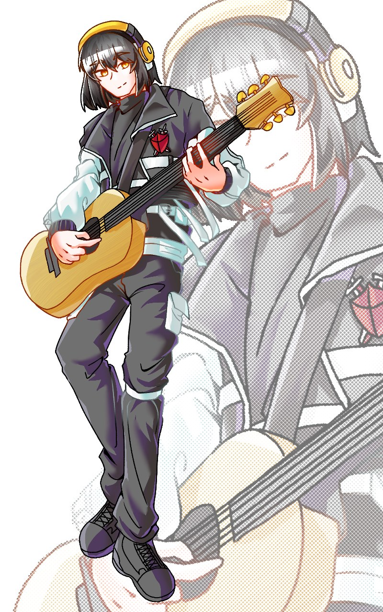
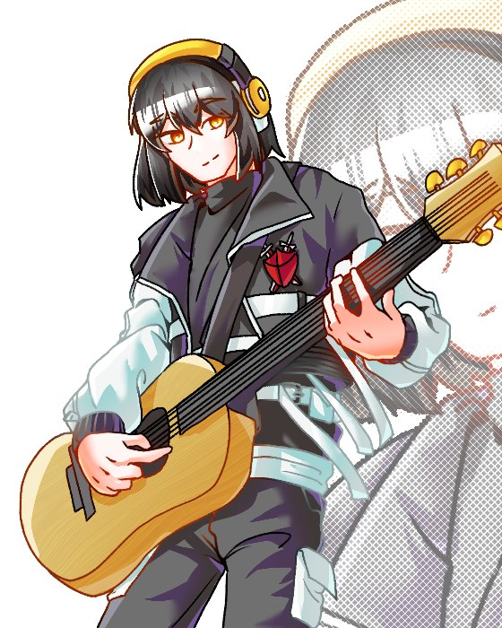

전우곤
소중한 동생
“넌 분명 잘 할 수 있고, 뭐든 될 수 있어. 넌 그런 아이니까.”
소중한 동생. 어쩌다 보니 입단을 함께하게 되었다. 위험한 일을 함께 한다는 게 많이 걱정되긴 하지만 그래도 우곤이는 강인한 아이니까! 언제나 믿고 있다.
FILE No.???Virtus // Agent
[ 평화의 뮤지션! ]
전우치
비르투스 대원
“오늘 만든 곡, 들어보겠나?”

Jeon
Woochi
| 1.1 | Name | 전우치 / Jeon Woochi |
|---|---|---|
| 1.2 | Sex | 남성 |
| 1.3 | Age | 23세 |
| 1.4 | Height / Weight | 187cm / 표준 |
| 1.5 | Faction | 비르투스 · 대원 |
| 1.6 | Attribute | 특수 |
| 1.7 | Special | 환음향연 |
| 1.8 | Talent | 음파조율 |
| 1.9 | Birthday | 8월 30일 |
| 1.10 | Coupling | CL > HL > BL |

신청서의 외관 칸이 비어 있어, 항목은 그림에서 보이는 모습을 정리한 것이다.
항상 밝고 친절하며, 모두에게 따듯한 모습을 보인다. 먼저 나서기보단 모두를 격려하는 역할을 좋아한다. 어지간해서는 타인에게 화를 잘 내지 않으며 대부분의 사람을 존중하고 이해해 준다. 정리하자면 함께 있으면 마음이 편해지는 그런 사람이랄까.
아무도 싸우지 않는 평화를 사랑한다. 웬만한 일은 평화롭게 대화로 풀어 나가는 것을 좋아한다. 언성을 높이는 일을 좋아하지 않으며, 다툼이 생길 것 같으면 자신이 한발 물러서는 일도 잦다.
언제나 대의를 위한다. 위험에 처한 사람을 보면 그냥 넘어가지 못하며, 다툼은 싫어하지만 그렇다고 불의를 못 본 척 넘기지도 못한다. 어찌 되었든 그의 목표는 조금이라도 더 나은 세상을 만드는 것이기에.
앞에 나서 싸우는 것보다 뒤에서 아군을 지원해 주는 역할을 선호한다. 그렇다고 나서는 것 자체를 싫어하냐면, 그것은 또 아니다! 필요에 따라서는 자신이 나서기도 하지만 그보다는 기본적으로 타인이 활약할 수 있게 돕는 것을 더 좋아한다.
L
H
5.0 — HP
체력
200
// 총합 320 = 40 + 50 + 70 + 90 + 70 · 가장 높은 능력치는 정확성
ATK · 공격기
무기로도 사용될 수 있게 특수 제작된 통기타로 강하게 타격한다.
ATK · 공격기
기타를 사용해 평화롭고 잔잔한 노래를 부른다. 아군의 사기를 올릴 수 있다.
ATK · 공격기
기타를 사용해 빠르고 격한 노래를 부른다. 비트감 있는 음파로 적을 팬다.
DEF · 방어기
민첩하게 공격을 회피한다. 그 유연한 모습은 언뜻 보면 춤을 추는 것 같기도 하다.
Fantasia
환음향연
특수전장의 불필요한 소리는 줄이고 자신의 노래는 키워 아군의 사기를 올린다. 함께 싸울 동료가 남아 있지 않다면, 그 노래는 한 명을 향한 공격이 된다.
예로부터 음악은 아군의 사기를 올리는데 큰 도움을 주곤 했다. 해당 공간의 불필요한 소리는 줄이고 자신의 노래는 키운다. 아군의 공격력이 1.3배가 되고, 적군의 피해량이 0.8배가 된다. 해당 효과는 다음 자신의 턴이 종료될때까지 유지된다. 만약 아군 진영중 자신 혼자만 남은 상태라면, 사기를 올려줄 수 있는 동료가 남아있지 않다면 특수능력을 사용한 턴에 피해량 다이스를 굴려 나온 데미지의 2.5배를 지정 한명에게 가한다.
7.1 — 발동해 보기
연주를 시작하면 아군과 적군의 수치가 바뀐다.
아군과 적군의 기본값 20은 바뀌는 비율을 보여 주기 위한 예시 수치다. 다이스 값도 예시이며, 실제 다이스는 진행 규칙을 따른다.
Tuning
음파조율
음파를 눈으로 볼 수 있고, 보고 있는 음파라면 그 소리의 크기를 바꾸거나 한 곳으로 모을 수 있다.
음파를 시각적으로 볼 수 있으며, 원한다면 자신이 보는 음파를 타인에게 시각화 시켜줄 수도 있다. 시각적으로 보이는 음파는 자신의 귀에 닿는 음파로 한정되며 음파를 보고 있는 상태에서는 그 음파의 근원지에서 나는 소리의 진폭을 조절하거나 사방으로 퍼지는 음파를 한 곳으로 집중시킬 수 있다. 조절한 소리 진폭은 냅둬도 1시간이 지나면 원래대로 돌아간다. 음파가 보이지 않는 상태에서는 대상의 진폭을 조절할 수 없기 때문에 능력 사용을 위해서는 대상이 어떤 방식으로든 소리를 내고 있어야 한다. 예를들자면, 한 벽의 소리진폭을 0으로 조절했다고 하면 그 벽은 무엇을 부딪쳐도, 심지어 부순다 하더라도 아무 소리도 나지 않는다. 또한 음파를 한곳으로 집중시킨다면 아무리 큰 소리더라도 집중시킨 곳에서만 들린다.
8.1 — 직접 조율해 보기
근원지를 고르고 진폭을 움직여 보자.
그림 속 근원지 배치와 동료는 예시다. 귀를 막는 헤드폰 이야기는 09 특징에 있다.
9.1
능력으로 인해 귀를 막지 않으면 시야가 많이 어지러워져 항상 헤드폰으로 귀를 막고 있다. 소리를 못 듣는 것은 아니다. 귀가 밝은 편이기에 귀를 막은 상태에서도 집중하면 정상적인 대화가 가능하다. 약간의 독순술을 할 줄 아는 덕도 있다. 다만 이 때문에 소리에 예민하게 반응하지는 못해서 뒤에서 다가오면 놀라곤 한다.
9.2
우치가 좋아하는 것들이다. 가능하다면 우치는 본래 싱어송라이터가 되려고 했었다. 옛날이라면 음유시인이라고 불렸을 것이다. 그러나 어쩔 수 없는 사정으로 꿈을 이루진 못했다. 그래도 종종 개인적으로 노래하고 작곡을 하며 취미 생활은 계속 이어 나가고 있다.
9.3
춤, 노래, 미술 등등... 예술과 관련한 분야라면 뭐든 평균 이상의 재능은 가지고 있다. 그중에서 음악을 가장 좋아할 뿐이다. 지나가다 보면 그가 흥얼거리고 있는 것을 자주 볼 수 있다.
9.4
주로 하게체를 쓴다. 진짜 말투는 아니고, 컨셉이기 때문에 필요하다고 생각될 때나 다급할 때는 평범한 말투가 튀어나온다.
9.5
입단 후 항상 열심히 하는 축이다. 그러나 항상 앞서 싸우는 것은 선호하지 않고, 뒤에서 지원해 주는 방향을 좋아한다. 때때로는 자신은 이곳에 있을 만큼 대단한 사람이 아니라는 말도 하곤 한다. 그러나 싸워야 할 때가 온다면 결코 물러서지 않고 끝까지 버텨 낸다.
10.1
통기타
acoustic guitar
기타 소리를 발현 능력의 보조 도구로 사용하려고 가지고 다닌다. 다만 평소에 노래할 때도 쓰고, 아무래도 전투용으로 꽤 튼튼하게 개조되었기에 가끔 그냥 휘둘러서 타격용으로 쓰기도 한다.
10.2
수첩
notebook
문득 떠오르는 악상이나 이야기, 가사 등을 적어 놓는다. 가끔 낙서를 하기도 한다.
전우곤
소중한 동생
“넌 분명 잘 할 수 있고, 뭐든 될 수 있어. 넌 그런 아이니까.”
소중한 동생. 어쩌다 보니 입단을 함께하게 되었다. 위험한 일을 함께 한다는 게 많이 걱정되긴 하지만 그래도 우곤이는 강인한 아이니까! 언제나 믿고 있다.
전우곤의 진영은 신청서에 적혀 있지 않아, 우치와 같은 문장을 임시로 붙였다.
For a better world
[ 글쎄. 더 나은 세상을 만들 수 있다면 그것만으로 된 것 아니겠나? ]
오너 한마디 — 잘 부탁드립니다!